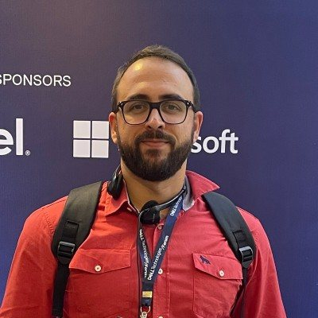

Denis Dourado Leite
Gerente de Infraestrutura, Cloud, Segurança e ProjetosProfissional com mais de 15 anos de experiência em Tecnologia da Informação, atuando em ambientes corporativos críticos com foco em infraestrutura, servidores, redes e governança de TI.
MBA em Gestão de Projetos e certificação ITIL 4 Foundation, combinando visão estratégica com ampla capacidade técnica na sustentação e evolução de ambientes complexos.
Principais competências
- Administração de ambientes virtualizados como VMware vSphere, Hyper-V e Proxmox
- Gestão de servidores Windows e Linux
- Active Directory, GPOs e políticas de segurança
- Infraestrutura física de Data Center e serviços Microsoft
- Redes corporativas e segurança com Fortigate, Cisco Meraki e Ubiquiti
- Políticas de backup, disaster recovery, monitoramento e hardening
- Automação com PowerShell e Bash Script
- Governança de TI baseada em ITIL v4
Atuação profissional
- Gestão de ambientes críticos e de alta disponibilidade
- Orquestração de infraestrutura híbrida
- Implementação de soluções de conectividade em ambientes remotos
- Segurança da informação com base em ISO/IEC 27001
- Suporte técnico avançado N2 e N3
- Documentação técnica, melhoria contínua e indicadores de operação
- Gestão de ciclo de vida de servidores e otimização de recursos